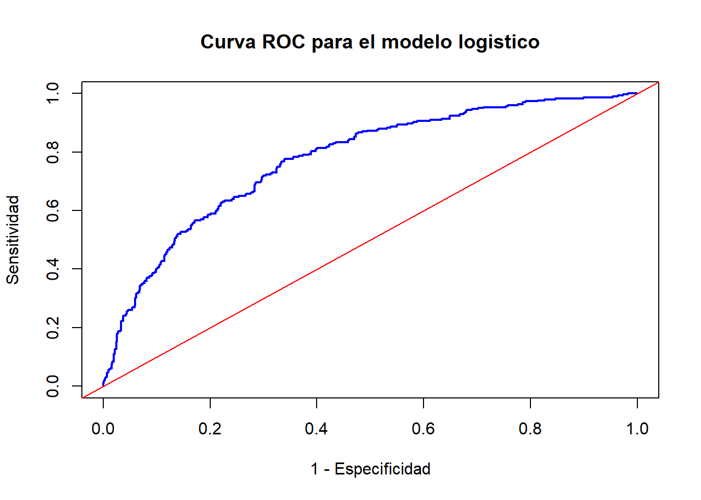

Warning: package 'Fahrmeir' was built under R version 4.1.3
# Cargamos una base de datos ya pre-procesadadata(credit)# help(credit)head(credit)
Y Cuenta Mes Ppag Uso DM Sexo Estc
1 buen no 18 pre buen pagador privado 1049 mujer vive solo
2 buen no 9 pre buen pagador profesional 2799 hombre no vive solo
3 buen bad running 12 pre buen pagador profesional 841 mujer vive solo
4 buen no 12 pre buen pagador profesional 2122 hombre no vive solo
5 buen no 12 pre buen pagador profesional 2171 hombre no vive solo
6 buen no 10 pre buen pagador profesional 2241 hombre no vive solo
Estimación
modelo_logistic <-glm(Y ~ ., family = binomial, data = credit)summary(modelo_logistic)
Call:
glm(formula = Y ~ ., family = binomial, data = credit)
Deviance Residuals:
Min 1Q Median 3Q Max
-2.0572 -0.8050 -0.4581 0.9483 2.4655
Coefficients:
Estimate Std. Error z value Pr(>|z|)
(Intercept) -1.178e+00 2.693e-01 -4.374 1.22e-05 ***
Cuentagood running -1.952e+00 2.060e-01 -9.472 < 2e-16 ***
Cuentabad running -6.346e-01 1.764e-01 -3.598 0.000321 ***
Mes 3.503e-02 7.849e-03 4.463 8.10e-06 ***
Ppagpre mal pagador 9.884e-01 2.529e-01 3.907 9.33e-05 ***
Usoprofesional 4.744e-01 1.605e-01 2.956 0.003112 **
DM 3.242e-05 3.335e-05 0.972 0.330893
Sexohombre -2.235e-01 2.208e-01 -1.012 0.311453
Estcvive solo 3.854e-01 2.194e-01 1.757 0.078921 .
---
Signif. codes: 0 '***' 0.001 '**' 0.01 '*' 0.05 '.' 0.1 ' ' 1
(Dispersion parameter for binomial family taken to be 1)
Null deviance: 1221.7 on 999 degrees of freedom
Residual deviance: 1017.3 on 991 degrees of freedom
AIC: 1035.3
Number of Fisher Scoring iterations: 4
Confusion Matrix and Statistics
Reference
Prediction buen mal
buen 636 184
mal 64 116
Accuracy : 0.752
95% CI : (0.724, 0.7785)
No Information Rate : 0.7
P-Value [Acc > NIR] : 0.000151
Kappa : 0.3333
Mcnemar's Test P-Value : 4.14e-14
Sensitivity : 0.3867
Specificity : 0.9086
Pos Pred Value : 0.6444
Neg Pred Value : 0.7756
Precision : 0.6444
Recall : 0.3867
F1 : 0.4833
Prevalence : 0.3000
Detection Rate : 0.1160
Detection Prevalence : 0.1800
Balanced Accuracy : 0.6476
'Positive' Class : mal
LogLoss
Hasta ahora, no aprovechamos que no predecimos solo clases, sino también probabilidad de pertenencia a una clase.
En ese sentido, no hemos empleado que una predicción de clase puede estar asociada a una predicción de probabilidad muy cercana a 1.
Esta cantidad no es interpretable, pero se usa para comparar modelos de clasificación.
plot(1- analysis$specificities, analysis$sensitivities,ylab ="Sensitividad", xlab ="1 - Especificidad",main ="Curva ROC para el modelo logistico",type ="l", col ="blue", lwd =2)abline(a =0, b =1, col ="red")

Punto de corte
Para encontrar el mejor equilibrio posible entre sensibilidad y especificidad (en caso nos interese balancearlos), usamos el criterio del índice J de Youden: \(J = \text{ sensitivity } + \text{ specificity } - 1\) .
Se puede usar otro criterio, como encontrar el punto más en la curva ROC más cercano, respecto a distancia euclideana, al punto (1, 0), pues tal vértice representa 100% sensibilidad y 100% especificidad.
e <-cbind( analysis$thresholds, analysis$sensitivities + analysis$specificities -1)head(e)
¿Cómo se evalúa y selecciona un modelo predictivo?
Solución ideal en una situación de abundancia de datos.
Validación cruzada (CV):
Conjunto de validación
LOOCV
k-fold CV
Bootstrapping
Eficiencia de un método de aprendizaje
Modelo bueno cuando se puede generalizar.
Queremos un método de aprendizaje que funcione bien con datos nuevos (error de prueba bajo).
Cada modelo tiene una métrica poblacional (accuracy, especificidad, etc), que no depende de los datos de entrenamiento ni test.
Esto es importante para:
Selección de modelos: Estimar el rendimiento predictivo de diferentes modelos para elegir el mejor.
Evaluación de modelos: Estimar su rendimiento (error de predicción) del modelo final sobre un nuevo conjunto de datos.
Error de entrenamiento vs Error de prueba
El error de prueba puede subestimar drásticamente el error de prueba.
Funciones de pérdida
Se suele usar MSE (error cuadrático medio) y el ratio de mala clasificación.
El reto
En los ejemplos anteriores, sabíamos la verdad, por lo que pudimos evaluar el error de entrenamiento y prueba.
En la realidad, tal no suele ser el caso.
Situación con abundancia de datos
Es una situación ideal, usualmente no realista.
Consiste en que se cuenta con una muestra tan representativa de la población, que, al dividirla en tres partes, cada una de ellas es también representativa de la población.
Partición:
Conjunto de entrenamiento (training set): Para ajustar (estimar) el modelo .
Conjunto de validación (validation set): Para seleccionar el mejor modelo .
Conjunto de evaluación o prueba (test set): Para evaluar qué tan bien el modelo se ajusta un conjunto nuevo e independiente de datos.
Como esta situación no suele ocurrir, se hace uso eficiente de la muestra aplicando técnicas de remuestro de datos.
Una estrategia alternativa para seleccionar el modelo* es usando métodos de penalización por complejidad, como Lasso.o AIC.
Proposition 1 Tras realizar el ajuste de modelo, selección de un único modelo y evaluación de aquel modelo; el modelo se vuelve a estimar usando ahora aquellos tres conjuntos de datos juntos, modelo que sería el que se aplica en producción.
Validación cruzada (CV)
Situación de selección de modelos, no evaluación.
No es necesariamente un muestro simple, puede ser muestreo estratificado, entre otros.
Algunas técnicas:
LOOOCV: Validación cruzada dejando uno afuera.
K-fold Cross Validation: Validación cruzada con \(K\) iteraciones; usualmente en 5 o 10 grupos.
Enfoque usando un conjunto de validación
Suponga que cuenta con un conjunto de datos; y, a parte, un conjunto de evaluación.